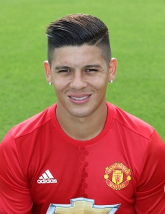

SQUAD - GOALKEAPERS
Player Profile

| Birthdate: | 12 Apr 1994 |
| Birthplace: | Bingerville, Ivory Coast |
| Position: | Defender |
| Joined United: | 08 Jun 2016 |
| Joined From: | Villarreal |
| International: | Ivory Coast |
| United Debut: | 7 Aug 2016 v Leicester City (N) |
| Appearances: | 14 |
| Goals Scored: | 0 |
№:3
Bailly
Player Profile

| Birthdate: | 21 Feb 1992 |
| Birthplace: | Preston, Lancashire |
| Position: | Defender |
| Joined United: | 01 Jul 2011 |
| Joined From: | Blackburn Rovers |
| International: | England |
| United Debut: | 7 Aug 2011 v Man City (N) |
| Appearances: | 147 |
| Goals Scored: | 5 |
№:4
Phil Jones
Player Profile
| Birthdate: | 20 Mar 1990 |
| Birthplace: | La Plate, Argentina |
| Position: | Defender |
| Joined United: | 20 Aug 2014 |
| Joined From: | Sporting Lisbon |
| International: | Argentina |
| United Debut: | 14 Sept 2014 v QPR (H) |
| Appearances: | 69 |
| Goals Scored: | 1 |
№:5
Marcos Rojo
Player Profile
| Birthdate: | 09 Mar 1990 |
| Birthplace: | Amsterdam, Netherlands |
| Position: | Defender |
| Joined United: | 01 Sep 2014 |
| Joined From: | Ajax |
| International: | Netherlands |
| United Debut: | 14 Sept 2014 v QPR (H) |
| Appearances: | 102 |
| Goals Scored: | 4 |
№:17
Blind
Player Profile
| Birthdate: | 22 Nov 1989 |
| Birthplace: | Greenwich, London |
| Position: | Defender |
| Joined United: | 07 Jul 2010 |
| Joined From: | Fulham |
| International: | England |
| United Debut: | 08 Aug 2010 v Chelsea (N) |
| Appearances: | 218 |
| Goals Scored: | 12 |
№:12
Smalling
Player Profile
| Birthdate: | 12 Jul 1995 |
| Birthplace: | Kingston-upon-Thames, Surrey |
| Position: | Defender |
| Joined United: | 27 Jun 2014 |
| Joined From: | Southampton |
| International: | England |
| United Debut: | 27 Sep 2014 v West Ham (H) |
| Appearances: | 41 |
| Goals Scored: | 0 |
№:23
Luke Shaw
Player Profile

| Birthdate: | 04 Aug 1985 |
| Birthplace: | Nueva Loja, Ecuador |
| Position: | Defender |
| Joined United: | 30 Jun 2009 |
| Joined From: | Wigan Athletic |
| International: | |
| United Debut: | 9 Aug 2009 v Chelsea (N) |
| Appearances: | 264 |
| Goals Scored: | 21 |
№:25
Antoino Valencia
Player Profile
| Birthdate: | 02 Dec 1989 |
| Birthplace: | Legnano, Italy |
| Position: | Defender |
| Joined United: | 11 Jul 2015 |
| Joined From: | Torino |
| International: | Italy |
| United Debut: | 8 Aug 2015 v Tottenham (H) |
| Appearances: | 47 |
| Goals Scored: | 1 |
№:36
Darmian
Player Profile
| Birthdate: | 02 Jan 1998 |
| Birthplace: | Amsterdam |
| Position: | Defender |
| Joined United: | 02 Sep 2014 |
| Joined From: | Ajax |
| International: | Netherlands U16 |
| United Debut: | 28 Feb 2016 v Arsenal (H) |
| Appearances: | 15 |
| Goals Scored: | 0 |
№:24
Fosu-Mensah